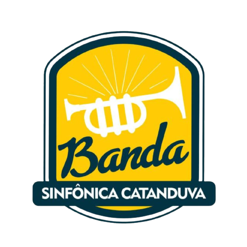

Banda Sinfônica de Catanduva
Página Inicial
Nossa História
Portfólio de Apresentações
Contato

A Banda Sinfônica de Catanduva é composta por aproximadamente 40 músicos de instrumentos característicos de tal formação, como: flautas, clarinetes, saxofones, trompetes, trompas, trombones, contrabaixo, piano e percussão. Seu objetivo é ampliar o acesso à música instrumental, através de shows de alta qualidade artística. A Banda é referência artística no seguimento de banda sinfônica e no interior do estado de São Paulo, com músicos do município de Catanduva, busca levar a toda a população, cultura e entretenimento de elevado nível de performance artística. As atividades do Coro Sinfônico e da Banda Sinfônica são abertas a todos os interessados em participar. Os ensaios do coro são realizados às segundas-feiras, das 20h às 21h, e aos domingos, das 8h30 às 11h30, para a banda, ambos na Estação Cultura. As atividades integram as Oficinas Culturais da Secretaria de Cultura de Catanduva.